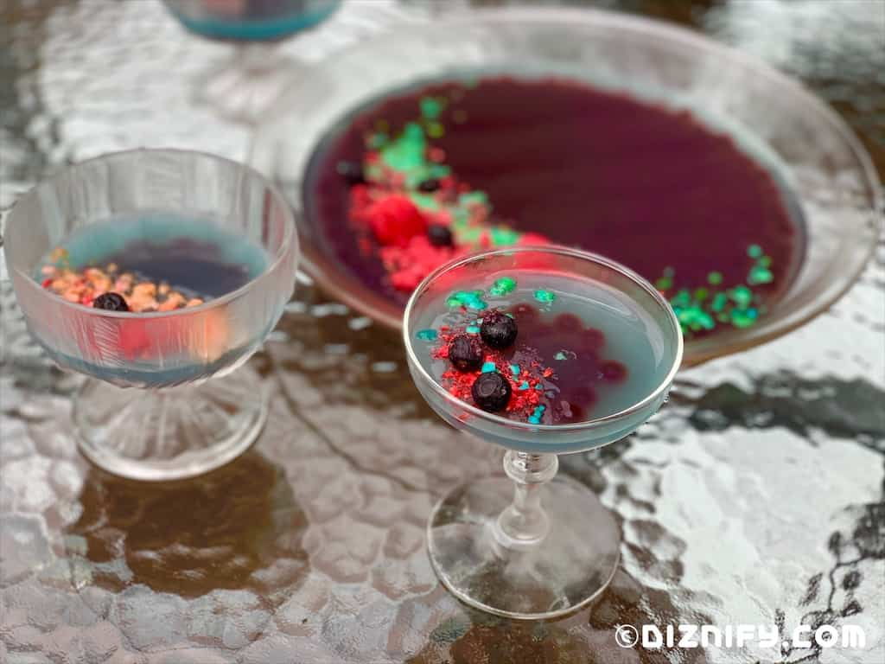
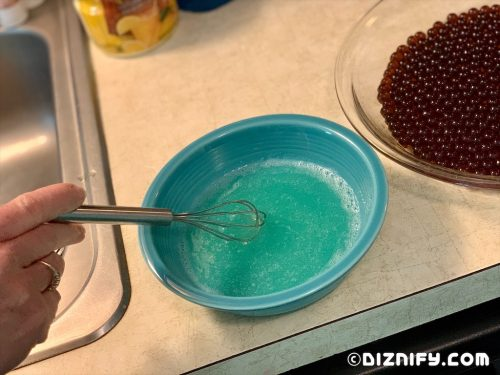
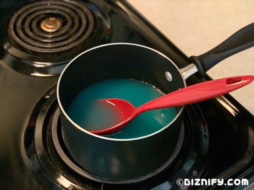
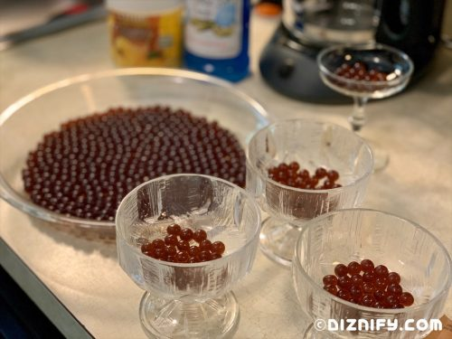
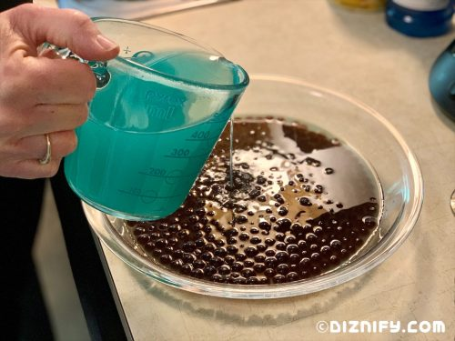
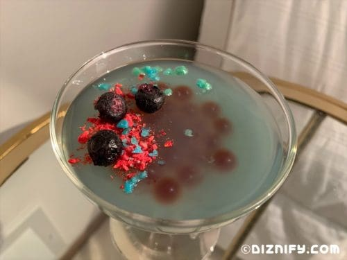

Oga's Obsession

Description
Ingredients
- 2 cups lemonade. We made lemonade using Country Time brand lemonade mix to avoid lemon pulp in our gelatin dessert.
- 6 tablespoons Monin Cotton Candy Syrup
- 1 tablespoon unflavored Gelatin Powder
- 2 cups boba popping pearls.
- Popping candy (Pop Rocks). For ours, we liked the Grape (brownish color), Blue Razz (blue color) and Green Apple (green color) the best.
- Freeze dried fruit. We used raspberries (crushed in a sandwich bag) and blueberries.
Glassware
We recommend using Petri dishes (yes you read that right!) or Champagne Cups.
Steps
- Get out the dishes you'd like to use for your gelatin. This recipe yields about 2.25 cups of gelatin liquid. For us, this was enough for us to fill a 10” pie dish and four, 4” sherbet dishes, but use whatever dishes you'd like! The gelatin's blue color is easiest to see in smaller, single serve glasses such as the food-safe petri dishes Disney uses.
- Stir the cotton candy syrup into the lemonade until combined.
- In a small bowl, add 1/3 cup of the cotton candy lemonade. Add the gelatin and whisk until combined. Let set for about 5 minutes, until thickened. While the gelatin mixture sits for 5 minutes, immediately move onto step 3
- Pour the rest of the cotton candy lemonade into a saucepan and heat, over medium heat, until hot, but not bubbling. Once hot, remove the pan from the heat and immediately add the gelatin mixture. Scrape the bowl clean to get every bit of the gelatin! Stir to combine.
- Prepare your glass dish(es) by lining the bottom(s) with a single layer of boba popping pearls.
- Slowly and carefully (so as not to disturb the boba), pour the gelatin mixture into the glass dish(es), filling to about 1/4 inch above the top of the boba popping pearls. Don’t overfill the dish or the boba popping pearls will start to float!
- Carefully transfer the dish(es) to the refrigerator until set. This will take about 4 to 6 hours, or you can let it chill overnight. Ours took about 4 hours for the 4” dishes and 6 hours for the 10” pie dish.
- Just before serving, garnish the tops of the gelatin with Pop Rocks and freeze-dried fruit. Enjoy!
